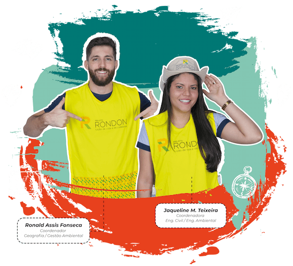
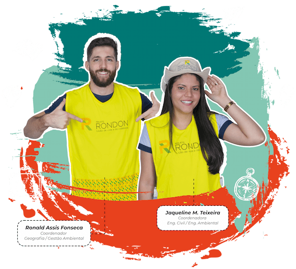

Conheça nossos cursos
Licenciatura
Formação de professores para atuação em áreas específicas
- Ciências Biológicas | ⏳ 8 Semestres
- Ciências Sociais | ⏳ 8 Semestres
- Educação Especial | ⏳ 8 Semestres
- Educação Física | ⏳ 8 Semestres
- Filosofia | ⏳ 8 Semestres
- Física | ⏳ 8 Semestres
- Geografia | ⏳ 8 Semestres
- História | ⏳ 8 Semestres
- Letras-Libras | ⏳ 8 Semestres
- Matemática | ⏳ 8 Semestres
- Pedagogia | ⏳ 8 Semestres
- Química | ⏳ 8 Semestres
- Ensino Religioso | ⏳ 8 Semestres
Tecnológico
Curso superior de curta duração
- Análise e Desenvolvimento de Sistemas | ⏳ 5 Semestres
- Empreendedorismo | ⏳ 4 Semestres
- Gestão Ambiental | ⏳ 4 Semestres
- Gestão de Recursos Humanos | ⏳ 4 Semestres
- Gestão Financeira | ⏳ 4 Semestres
- Gestão Pública | ⏳ 4 Semestres
- Marketing | ⏳ 4 Semestres
- Processos Gerenciais | ⏳ 4 Semestres
- Segurança no Trabalho | ⏳ 6 Semestres
- Serviços Jurídicos e Notariais | ⏳ 4 Semestres
- Sistemas para Internet | ⏳ 5 Semestres
Bacharelado
Formação de profissionais para atuação em diversas áreas
- Administração | ⏳ 8 Semestres
- Ciências Contábeis | ⏳ 8 Semestres
- Educação Física | ⏳ 8 Semestres
- Engenharia Ambiental e Sanitária | ⏳ 10 Semestres
- Engenharia Civil | ⏳ 10 Semestres
- Engenharia de Produção | ⏳ 10 Semestres
- Letras-Libras | ⏳ 8 Semestres
- Teologia | ⏳ 7 Semestres
ATENÇÃO!
Para cursar uma Graduação é necessário possuir, no mínimo, o Ensino Médio completo. Se você já concluiu o Ensino Médio, cadastre-se agora e dê mais um passo na sua carreira.
Formas de ingresso

Nota do ENEM
Utilize a sua nota do Enem para ingressar no curso que sempre sonhou.

Vestibular
Da inscrição à matrícula, tudo no conforto e segurança da sua casa.

Obtenção de novo título
Obtenha uma nova titulação e faça a sua matrícula de maneira simples e rápida.

Transferência
Transfira-se para a melhor Faculdade EaD do Brasil e estude com os melhores.

Mude a sua vida profissional
O melhor jeito de aprender e os melhores recursos a sua disposição
- Videoaulas em todas as disciplinas e material didático 100% digital
- Diploma reconhecido pelo MEC, válido em todo o território nacional
- Diploma reconhecido pelo MEC, válido em todo o território nacional
- Realização de projetos práticos em todos os períodos do curso
- Aulas de nivelamento para as disciplinas básicas dos cursos
- Plataforma multicanal de aprendizagem para assistir às aulas sempre que quiser
- Material didático inovador com foco na aprendizagem prática do aluno
- Certificado profissional das disciplinas cursadas a cada semestre
O poder transformador de uma Graduação.


Projeto Rondon
Viva experiências transformadoras durante o seu curso
Que tal viajar pelo país, conhecer pessoas, realizar projetos e ainda receber um certificado do Ministério da Defesa?
Isso tudo é possível graças à parceria entre Faculdade Única e Governo Federal.
 


Vidas transformadas
Mais de 479 mil alunos já passaram por aqui e estão colhendo os resultados dessa escolha
Cada dia que passa a Faculdade melhora ainda mais. Tenho diversos elogios a fazer, mas um ponto forte para mim, e que quero citar, é o incentivo da Faculdades com os alunos referentes a artigos científicos, o que acho ótimo, pois é de grande importância esse aprendizado e conhecimento na nossa jornada acadêmica e profissional.
Paulo Sérgio Gomes
Graduação Online em Serviços Jurídicos e Notariais
Ter a oportunidade de estudar na Faculdade Única é uma alegria e realização, encontrar uma Faculdade online com tanta excelência em materiais, encontros virtuais e apoio aos alunos com tutores capacitados. Sou estudante do curso de Letras-Libras e posso afirmar que tudo na Faculdade faz diferença nos meus estudos, como a coordenadora do curso e a relação com a equipe.

Elizabeth Rodrigues Duarte
Graduação Online em Letras-Libras
Estou realizando meu primeiro curso EaD e fiquei surpreso com a qualidade dos conteúdos apresentados, o que superou todas as minhas expectativas. Desde já parabenizo a instituição pela forma em que conduz o curso de ótima qualidade desde o início.
José Nildo De Fontes Lima
Graduação Online em Engenharia Civil

Informações adicionais
- A Faculdade Única é credenciada pelo MEC para o oferecimento de cursos a distância? A Faculdade Única de Ipatinga está credenciada junto ao MEC por meio da Portaria nº 1.004, do dia 17/08/2017, para oferta de cursos de Ensino a Distância (EaD). Confira neste link o nosso cadastro no e-MEC:
- Quem pode fazer um curso de Graduação Online da Faculdade Única? Todos os cursos de Graduação Online da Faculdade Única são ofertados para aqueles que desejam alcançar novas oportunidades no mercado de trabalho, independentemente de já possuírem um diploma de Graduação ou não.
-
Qual a diferença entre um curso de bacharelado, licenciatura e tecnólogo?
Bacharelado: forma profissionais generalistas. O aluno terá um panorama amplo da área, com disciplinas teóricas e práticas. Ao concluir o curso, estará apto a atuar em diversos ramos de uma mesma área do conhecimento.
Licenciatura: busca capacitar profissionais para atuação na Educação Básica. A formação busca habilitar os docentes para atuação na Educação Infantil e nos anos iniciais do Ensino Fundamental, ou nas séries finais do Ensino Fundamental e do Ensino Médio, com áreas específicas do conhecimento.
Tecnólogo: é uma formação específica em determinada profissão. O currículo tem uma carga considerável de disciplinas práticas e está ligado às necessidades do mercado, formando profissionais capacitados para atender às demandas das empresas em setores e departamentos específicos. - Existe diferença entre diploma de um curso ofertado na modalidade presencial e EaD? Não. Ao concluir um curso de bacharelado, licenciatura ou tecnológico, o acadêmico receberá um diploma exatamente igual àquele emitido para um curso presencial, com a mesma validade, sem especificar a modalidade em que o curso foi feito.
- Existem momentos ao vivo com os alunos da minha turma e com o meu tutor? No decorrer do curso, durante a oferta de cada disciplina são agendados vários momentos ao vivo com o tutor, no qual todos os alunos podem sanar dúvidas, debater temas relacionados à disciplina e interagirem entre si.
- Como tenho acesso às videoaulas e demais conteúdos do meu curso? Você terá acesso ao conteúdo do seu curso pelo Ambiente Virtual de Aprendizagem (AVA), onde também será cumprida a maior parte da carga horária do curso. É por meio do AVA que o aluno acessa o material didático, assiste às videoaulas, participa de aulas ao vivo e tem acesso às bibliotecas virtuais. Além disso, as atividades em laboratórios e simuladores virtuais também são realizadas pelo AVA.